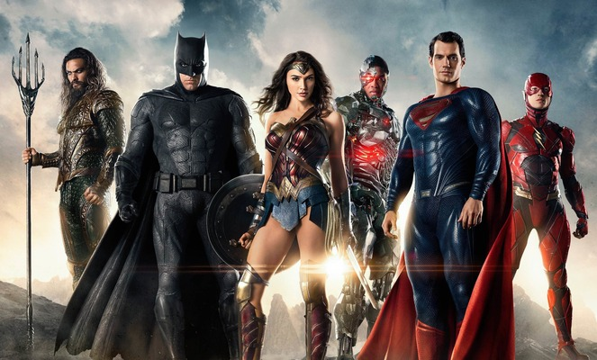

Wonder Woman is one of the most iconic superheroine in world of comic books and popular culture. She made her
first appearance in All Star. She was created by Willam Marston and was first introduced by DC Comics in
1941.
Also known as Diana Prince, Wonder Woman is an Amazonian warrior princess from the island of Themyscira.
She is the daughter of Queen Hippolyta and Zeus, the king of the Old Gods.
She is renowned not only for her incredible physical prowess but also for her unwavering commitment to
justice, equality and peace. Explore the remarkable journey of this amazing warrior as she battles injustice, champions equality, and inspires us to be heroes in our own lives.
With the Truth as her weapon and Justice as her cause, Wonder Woman is a symbol of empowerment and a
heroine that most of us aspire to be.
Welcome to a world of wonder and resilience! Welcome to the realm of Wonder Woman!
HER SUPERPOWERS
Wonder Woman posseses a wide array of powers and abilities making her one of the most powerful superheroes in the DC Universe. Her extraordinary strength allows her to go toe-to-toe with some of the mightiest foes, while her incredible speed enables her to react swiftly in any situation.
Her abilities include super strength, invulnerability, flight, combat skill, combat strategy, superhuman agility, healing factor and magic weaponry.
Along with her superpowers, she also has some great gears:
Indestructible bracelets - It is used to block bullets or other weapons.
Lasso-of-truth - This is used to force someone lassoed by it to tell the truth.
Invisible plane - Even though Wonder Woman can fly without an aircraft, she uses her
plane to fly into outer space.
Tiara - She can throw her tiara to knock enemies or trip them.
As a symbol of empowerment and heroism, Wonder Woman's superpowers are a testament to her unwavering dedication to making the world a better place.
WISDOM FROM WONDER WOMAN
Whether delivered in the pages of comic books, or portrayed on the big screen, these quotes from Wonder Woman have inspired many fans and admirers worldwide. In this collection, we delve into some of the most memorable phrases that reminds us about the power of truth, compassion, wisdom and strength.
“You can't always be strong, but you can always be brave.”
“You are stronger than you believe. You have greater powers than you know.”
“If No One Else Will Defend The World, Then I Must.”
"Fighting doesn't make you a hero."
"In the end, we will remember not the words of our enemies, but the silence of our friends."
These quotes are Wonder Woman's values, determination and her commitment to improving the lives of humanity.
WONDER'S CIRCLE

Alongside her incredible adventures, Wonder Woman has forged powerful alliances and enduring friendships with diverse group of heroes, each bringing their unique strength to the fight for justice.
Some of these are famous characters as well in the DC Comics universe. They are:
Superman
Batman
The Flash
Aquaman
Cyborg
In the world of Wonder Woman, friendship is a force as mighty as any superpower reminding us that together, we can achieve greatness and create a more equal and compassionate world.